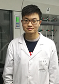

|

个人简历
2017.06 南京工业大学，先进化学制造研究院，教授
2008.07-2017.06 新加坡南洋理工大学，化学与生物化学系，博士后，
2006.01-2008.07 通化师范学院化学系，吉林通化，副教授
2005.09-2008.07 南开大学，化学系，博士
2002.09-2005.07 东北师范大学，化学系，硕士
2001.01-2005.12 通化师范学院，化学系，讲师
1995.07-2000.12 通化师范学院，化学系，助教
1991.09-1995.07 东北师范大学，化学系，学士
研究方向
2. 复合金属纳米结构的表面增强拉曼光谱及等离子体共振研究及应用。
3. 复合金属纳米结构催化性能研究。
现小组成员
 |
|||||
| 陈子杰(21级硕士) | 冀晋(21级硕士) | 姜婷婷(21级硕士) | |||
| 沈保威(22级硕士) | 王俊生(22级硕士) | 周叶帆(22级硕士) | |||
往届成员
 |
|||||
| 徐文佳(17级博士) | 宗建鹏(17级博士) | ||||
 |
 |
||||
| 田晓丽(17级硕士) | 李帅斌(17级硕士) | 贾佳(17级硕士) | |||
 |
 |  |
|||
| 项停(17级硕士) | 陈帅鹏(18级硕士) | 任权(18级硕士) | |||
 |
 |
 |
|||
| 安森源(19级硕士) | 范旭(19级硕士) | 吴小英(19级硕士) | |||
| 肖瑞雪(20级硕士) | 张杰(20级硕士) | 王允(20级硕士) | |||